Logistic Regression
1 后验概率
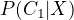
表示取出一个样本，其样本参数符合 X , 那么这个样本属于 Class1 的概率为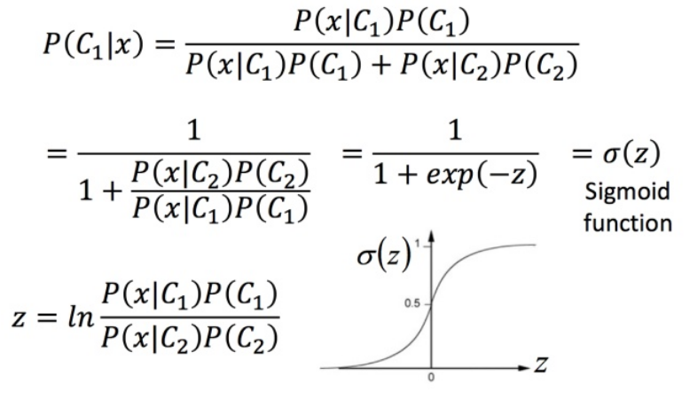
经过一系列的推导（查看李弘毅相关的视频，并不难），得出：
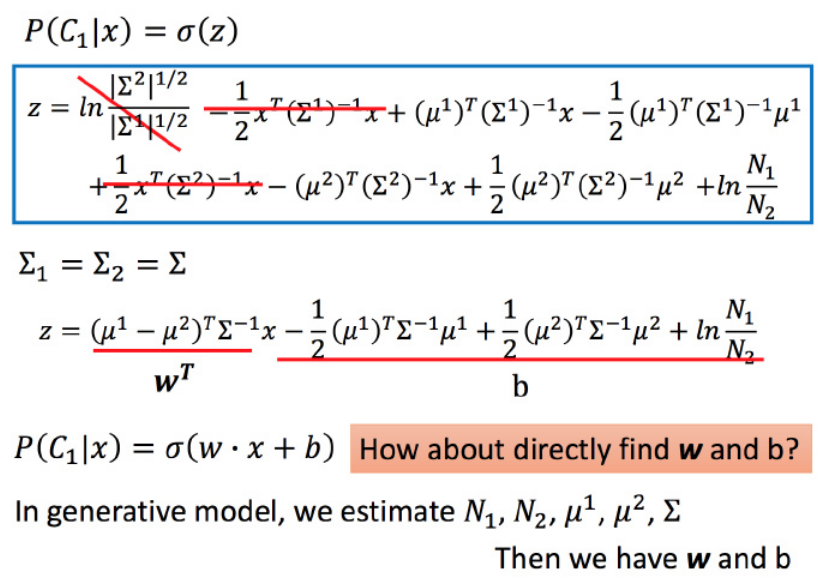
所以使用概率法得到的分类函数是线性的。
2 逻辑回归
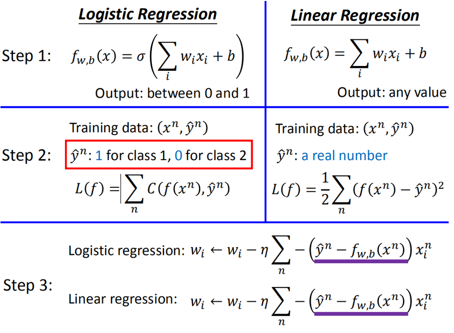
2.1 The Goodness of Function
上诉的 即 . 那么如何才能判断一个模型（）的好坏呢？
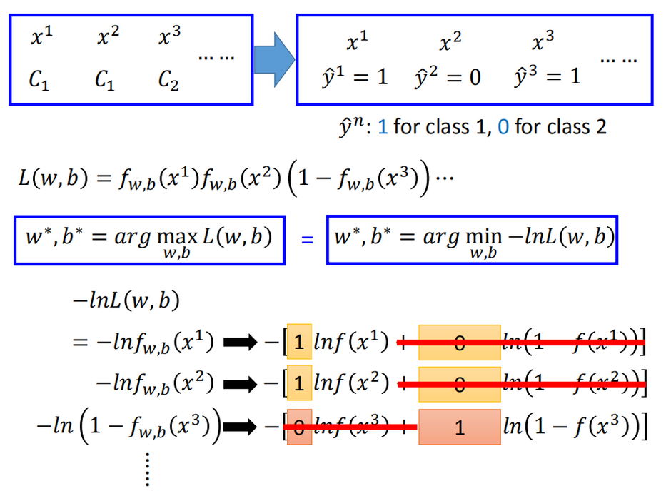
注：上诉有一错误：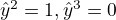
我们将原来的分类 C1, C2 分别用
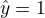
,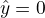
表示，使用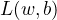
量化当前模型的好坏，那么对应的 w, b 应该是使得 L 函数值最大的两个量，即使得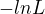
最小的量。最后，可以将 化为：
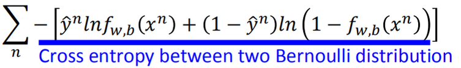
2.2 Find the best Function
使用 Gradient Descent 来寻找最好的 Function
求对 w 的偏微分：
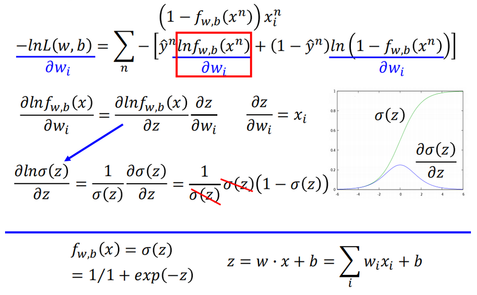
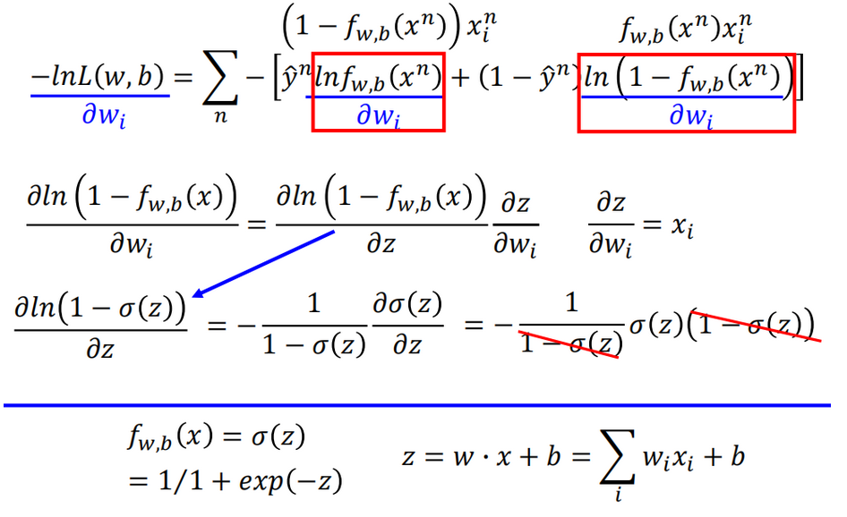
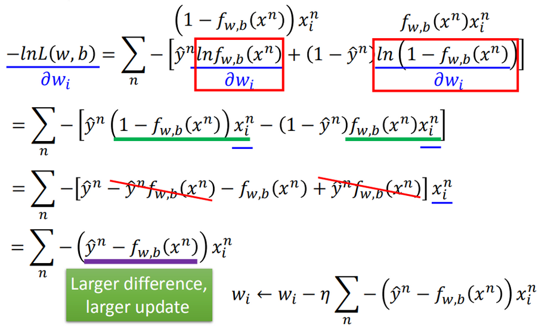
3 Sample 案例
从给定的数据分析某个人的收入是否大于 50K
代码和作业资料来自于： Dafish
3.1 数据处理
- 大于 50K 的
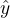
设为 1 , 小于的设为 0 - 剔除无用的行（首行）
X_train_my.csv中包含所有的数据（除了最后一列，最后一列属于结果），106个特征变量Y_train_my.csv中包含结果值
3.2 建模
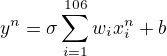
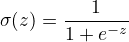
def getLinear(arrayX, arrayW, arrayB): X = np.dot(arrayX, arrayW) + arrayB return X def getSigmoidValue(z): s = 1 / (1.0 + np.exp(-z)) return np.clip(s, 1e-8, 1 - (1e-8))
3.3 判断模型好坏的方法
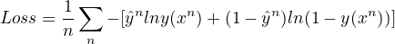
def getCrossEntropyValue(s, Y): arrayCrossEntropy = -1 * (np.dot(np.transpose(Y), np.log(s)) + np.dot((1-np.transpose(Y)), np.log(1-s))) / len(Y) return arrayCrossEntropy
3.4 Gradient Descent 更新参数
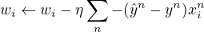
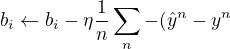
注：i 表示参数个数；n 表示样本个数
arrayGradientW = -1 * np.dot(np.transpose(X), (np.squeeze(Y) - s).reshape((intBatchSize,1))) arrayGradientB = np.mean(-1 * (np.squeeze(Y) - s)) arrayW -= floatLearnRate * np.squeeze(arrayGradientW) arrayB -= floatLearnRate * arrayGradientB